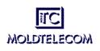
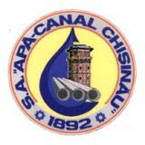
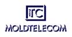
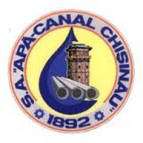

- To view the status of your accounts and make transfers using them
- To do instant exchange
- To make transfers and payments
- To pay your bills for mobile communication, internet, utilities, etc.
- To pay taxes, fines and government service agencies
- To review information about all the plastic cards
- To move and fill deposits online
- To make payments on credits
- Templates
- Thus, once a template is created in the Telebank.md system, you'll be freed from the troubles with your paper bills. With registered templates, you also can arrange an automatic payment of your services and bills (TELEBANK-AUTOPAY (Constant orders) ).
Telebank.md - is simple and quick to connect, doesn't require installing special software and features a user-friendly interface.
- View information about your current accounts, cards, deposits and get the exchange rates established by the National Bank of Moldova, BC EuroCreditBank SA and TeleBANK.MD system.
- Anyone with a mobile phone that supportts WAP/GPRS/3G can get access to this service. You have to setup mobile Internet access and visit the adress wap.telebank.md
The possibilities offered to Legal person:
- Get information about your account balances, movements in the account, details of payments made.
- Get information about the exchange rate.
The possibilities offered to Natural person:
- Get information about your account balances, movements in the account, details of payments made
- Get information about the exchange rate.
- To make payments of services: ChisinauGaz, Moldetelecom, Union Fenosa, Moldcell.
- Buy or sell currency
- Replenish Credit Card account
- Info on account balance;
- Exchange rates of The National Bank of Moldova and BC EuroCreditBank SA
- Information about BC EuroCreditBank SA
- Receiving balance via fax and exchange rates
- Contact with operator
- Information about using "Telebank" - IVR, demonstration of the system
- View the status of your accounts and make transfers using them
- Make instant exchange
-
To access the “TeleBank”-IVR system dial up the number 500-201. Then, you have to select the language that you need to receive answers of “TeleBank”-IVR. Press the button “1” for Russian or “2” for Romanian after that you enter in the main menu.
The items selection from the menu corresponds with the press of the phone numbers.


 


